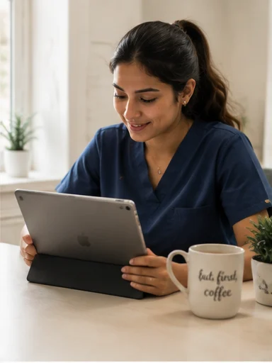
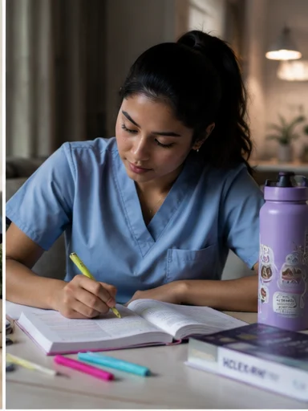
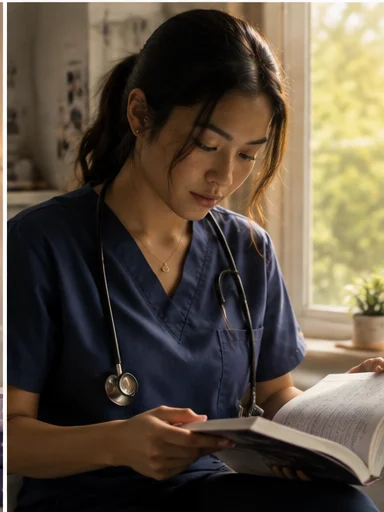
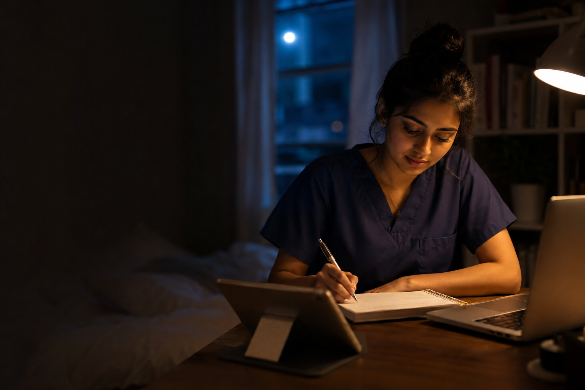

Foundations · 03
Photography
Documentary, not stock. Someone studying, not someone celebrating. The
photography already shot for the site is in photos/ and is
the reference — anything new has to sit next to it without looking
borrowed.
The look
What every frame has in common
- Natural light, usually late. A kitchen table at night, a window in the afternoon. Warm, slightly under-exposed, no fill.
- Nobody is smiling at the camera. Attention is on the work, or out of frame. No eye contact, no thumbs up, no laughing at a laptop.
- No stethoscope cliché. These are students, mostly not in scrubs, mostly not in a hospital. Scrubs appear only where a scene genuinely calls for them.
- Real surfaces. A cluttered table, a coffee cup, a phone face-down, a highlighter. Never a clean white desk with one MacBook.
- Muted, warm grade. Nothing saturated, nothing teal-and-orange, no vignette, no film grain filter.
- Room at the edges. Frames are shot loose so a paper block or a headline can sit on one third without covering a face.
The reference set
People



Portraits are close, calm and non-performative. They are used small — beside a quote or a use case — never blown up as a hero.
Places
Home, café, outside — the three places people actually get questions done. They carry the argument that the product fits into fifteen spare minutes.
Scenes

Using it
Type on photography
Type never sits directly on a busy frame. Either the photo takes a third and a solid paper block takes the rest, or the type sits on the ink ground with the photo beside it. There is no scrim, no gradient overlay, no blur panel — those are the SaaS tells the whole system is trying to avoid.
Never
- Stock photography of nurses in a corridor pointing at a tablet.
- A subject smiling straight down the lens.
- Anything that implies a clinical setting Nursia is not part of, or that could read as a real patient.
- Duotone, teal wash, or the highlighter colour applied to an image.
- A photo behind a question card. The card always sits on paper or ink.
for-chatgpt/photo-style-reference.png is the single frame to
hand to a photographer or an image model. One line of direction goes with
it: a nursing student studying at a kitchen table at night, natural
light, documentary, not smiling at camera, no stethoscope.